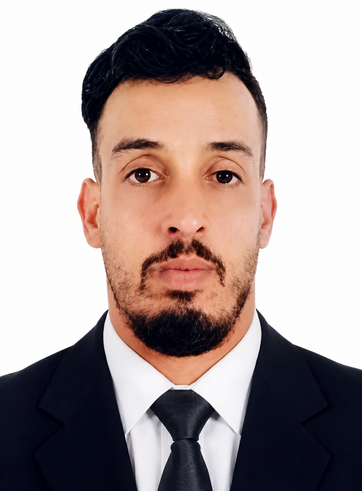
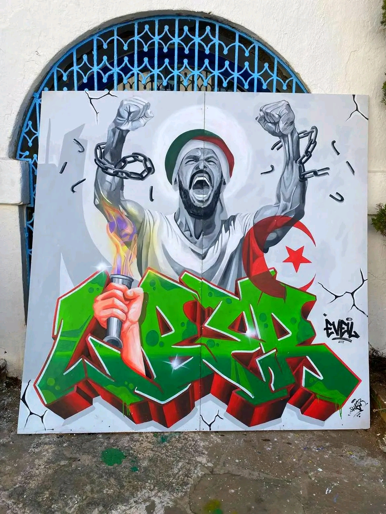
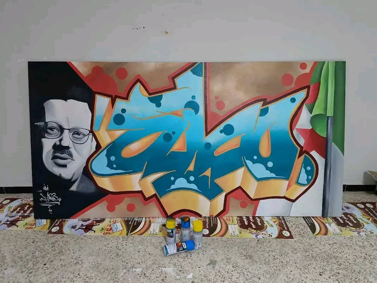
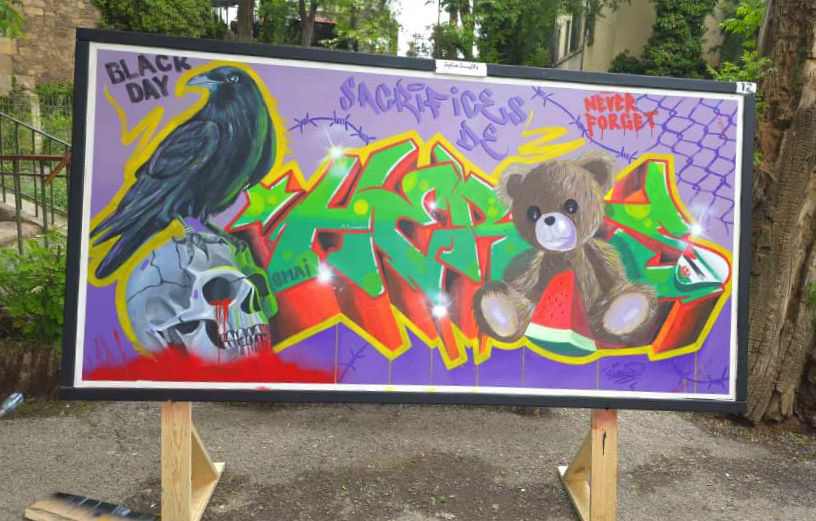
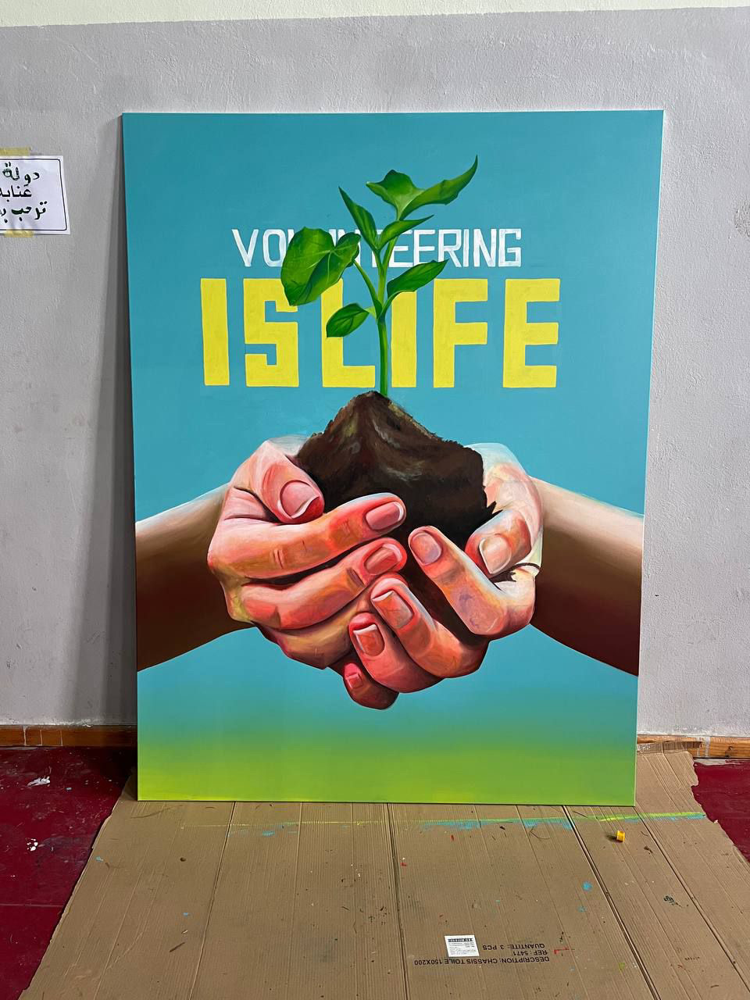

Art Gallery & Murals

وليد برابري فنان تشكيلي ورسّام جداريات وڨرافيتي من الجزائر، من مواليد 15 سبتمبر 1994 بولاية عنابة. حاصل على شهادة ليسانس قانون عام وماستر 2 قانون دولي. فنان عصامي يتمتع بخبرة في تنفيذ الجداريات والأعمال الفنية البصرية، مع اهتمام خاص بفن الشارع، التصميم الجرافيكي، والرسم بمختلف الخامات والتقنيات. شارك في العديد من المشاريع الفنية والثقافية والتربوية، وعمل مع مدارس وأكاديميات خاصة في تعليم الرسم للأطفال وتنظيم الأنشطة الفنية والإبداعية. كما ساهم في إنجاز جداريات وأعمال فنية ضمن مهرجانات وطنية ودولية، وحصل على عدة جوائز وشهادات تقدير تقديرًا لمساهماته الفنية. يرتكز أسلوبه على تحويل الأفكار والرسائل إلى أعمال بصرية مؤثرة تجمع بين الجانب الجمالي والتعبيري، مع اهتمام خاص بالهوية البصرية، الثقافة الحضرية، والتفاعل مع الفضاءات العامة. ويسعى من خلال أعماله إلى خلق تجارب فنية تترك أثرًا بصريًا وإنسانيًا لدى الجمهور.
روائع فنية وثقت بأبعاد فلسفية معاصرة

2025جدارية بأسلوب الغرافيتي المعاصر تم تنفيذها ضمن مسابقة فنية وطنية. تستند الفكرة إلى مفهوم الحرية والتحرر من القيود، حيث تم تجسيد حرف "I" في كلمة LIBER على هيئة شخصية تصرخ وهي تكسر السلاسل، in إشارة إلى قوة الإرادة والسعي نحو الانعتاق. تم تصميم الحروف بتداخل مستوحى من ثقافة فن الشارع الأوروبية مع توظيف الألوان لإبراز الطاقة والحركة داخل التكوين. السلاسل مصممة بذكاء على شكل رقم "62" كرمز لعام الاستقلال الذي يجسد قمة التحرر والسيادة الفكرية والوطنية.
Contemporary Graffiti / غرافيتي معاصر
بخاخات، فرشاة، ألوان أكريليك
الجزائر
مسابقة فنية وطنية

2024عبد الحفيظ بوالصوف – "حتى لا ننسى" أُنجز هذا العمل خلال الأيام الوطنية للرسم الجداري بتقنية الڨرافيتي تحت شعار "حتى لا ننسى"، المنظمة من 1 إلى 5 جويلية بولاية ميلة، برعاية مديرية الثقافة وإشراف مديرية الشباب والرياضة وبالتنسيق مع جمعية الحفلات لولاية ميلة. يجسد العمل شخصية الشهيد والمجاهد عبد الحفيظ بوالصوف (سي مبروك)، أحد أبرز مهندسي الثورة الجزائرية وأب المخابرات الجزائرية ومؤسس الإذاعة السرية للثورة. اعتمدت في هذا العمل على المزج بين البورتريه الواقعي وفن الڨرافيتي المعاصر، بهدف ربط الذاكرة التاريخية بالثقافة البصرية الحديثة وإيصال رسالة الثورة إلى الأجيال الجديدة بلغة فنية معاصرة.
بورتريه واقعي + ڨرافيتي
بخاخات، فرشاة، ألوان أكريليك
ولاية ميلة
الأيام الوطنية للرسم الجداري "حتى لا ننسى"

2024لوحة فنية تحمل كلمة (HEROES)، حيث جُسِّد حرف (O) على هيئة دبدوب مدمج ضمن تصميم الكلمة بشكل إبداعي. هذا العمل الجداري هو قطعة فنية معاصرة بأسلوب الغرافيتي، يعالج مواضيع الذاكرة، التضحية، والوعي الجماعي، من خلال دمج الرموز البصرية مع لغة فن الشارع لإنتاج سرد بصري قوي ومؤثر. في مركز التكوين، تظهر كلمة غرافيتي ملونة بالأخضر والأحمر بأسلوب حاد وديناميكي. عبارات مثل “BLACK DAY” و “SACRIFICES” و “NEVER FORGET” تعمّق الرسالة المفاهيمية للعمل.
Alternative Graffiti / غرافيتي معاصر
بخاخات، فرشاة، ألوان أكريليك
ولاية سطيف
مهرجان فني (ماي 2025)

2023هذه اللوحة تحمل رسالة إنسانية وبيئية قوية، وتتمحور حول مفهوم التطوع من أجل الحياة (Volunteering is Life). في مركز العمل الفني تظهر يدان متعاونتان تحتضنان كتلة من التراب تنمو منها نبتة خضراء يافعة. يرمز التراب إلى الأرض والبيئة والحياة الطبيعية، بينما تمثل النبتة النمو والأمل والاستمرارية. أما الأيدي المتشابكة فتعبر عن التعاون والتكافل والعمل الجماعي، وهي إشارة إلى أن حماية البيئة وتنمية المجتمع مسؤولية مشتركة تتطلب مشاركة الجميع. اختيار الخلفية الزرقاء يمنح إحساسًا بالهدوء والصفاء ويرمز إلى السماء والحياة، في حين يبرز اللون الأخضر في النبتة دلالات التجدد والاستدامة. كما أن العبارة المكتوبة في الخلفية "VOLUNTEERING IS LIFE" تؤكد الفكرة الرئيسية للعمل، وهي أن التطوع ليس مجرد نشاط مؤقت، بل أسلوب حياة يساهم في بناء مستقبل أفضل للأفراد والمجتمعات. من الناحية الفنية، اعتمدت اللوحة على أسلوب واقعي في رسم الأيدي مع اهتمام بالتفاصيل والتظليل، مما يعزز الإحساس بالإنسانية والارتباط المباشر بين الإنسان والطبيعة، ويجعل الرسالة البصرية واضحة ومؤثرة. فكرة العمل: يجسد هذا العمل أهمية التطوع في رعاية البيئة وخدمة المجتمع، ويؤكد أن الأعمال الصغيرة التي يقوم بها الأفراد معًا يمكن أن تنمو وتثمر مثل النبتة التي تنبثق من بين الأيدي، لتصبح رمزًا للحياة والأمل والتنمية المستدامة.
ڨرافيتي
بخاخات، فرشاة، ألوان أكريليك
ولاية الطارف
اللقاء الوطني الخامس للشباب المتطوع